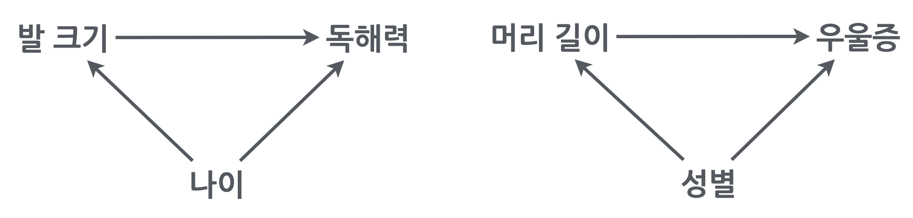

Statistical thinking
데이터를 분석한다는 것은?
Data is a window, not a mirror to reality!
- 수많은 가정과 사전 지식을 전제로 함: 올바른 결과 뿐 아니라 효율적인 분석을 위해 필요
- 분석 결과는 주어진 가정에 대한 분명한 제시(transparency)와 그 가정을 기반으로 한 적절한 해석이 요구됨
예측 모델 vs. 관계/원인 분석
예측 모델
예측의 신속성과 정확성
Machine Learning 강점
Algorithmic
- 이미지/사물 인식
- 개인화된 추천 목록: 유튜브, 넷플릭스
- 시리, ChatGPT의 답변
- 비즈니스 분석
- 이상치 탐지
관계/원인 분석
현상/실재에 대한 이해과 매커니즘 파악
Statistical Models 강점
Parametric
- 음식/운동의 효능
- 광고의 효과
- 복지/치안 정책의 효과
Causal Inference

Source: The Book of Why by Judea Pearl, Dana Mackenzie (2018)
Association
- 관찰을 기반으로 규칙성 발견하고 예측
- 올빼미가 쥐의 움직임을 관찰하고 잠시 후 쥐가 어디에 있을지를 파악
- 컴퓨터 바둑 프로그램이 수백만 개의 바둑 게임 데이터베이스를 연구하여 어떤 수와 승률이 높은지 알아내는 것
- 하나의 이벤트를 관찰하면 다른 이벤트를 관찰할 가능성이 달라진다면, 하나의 이벤트가 다른 이벤트와 연관되어 있다고 말할 수 있음
- “치약을 구매한 고객이 치실도 구매할 가능성이 얼마나 되는가?”; \(P(치실 ~| 치약~)\)
- 통계의 핵심: 상관관계, 회귀
- 올빼미는 쥐가 왜 항상 A 지점에서 B 지점으로 가는지 이해하지 못해도 훌륭한 사냥꾼이 될 수 있음
- 위스키 한 병을 들고 있는 보행자가 경적을 울릴 때 다르게 반응할 가능성이 있다는 것을 기계가 스스로 파악할 수 있는가?
- Association 단계의 한계: 유연성과 적응성의 부족
Intervention
- 관찰을 넘어, 세상에 대한 개입
- “치약 가격을 두 배로 올리면 치실 판매량은 어떻게 될까?”
- 데이터에는 없는 새로운 종류의 지식을 요구
- 통계학의 언어로는 이 질문을 표현하는 것조차 불충분함
- 수동적으로 수집된 데이터만으로는 이러한 질문에 대답할 수 없음
- 과거의 데이터를 이용하면?
- 과거에 가격이 두 배 비쌌을 때, 치실 판매량으로 추론?
- 이전에 가격이 두 배 비쌌을 때, 다른 이유가 있었을 수 있음
- 전통적으로 실험을 통해 해결
- 정확한 인과 관계 모델이 있으면 관찰 데이터만으로도 가능; \(P(치실 ~| ~do(치약~))\)
- 사실, 일상 생활에서 항상 개입을 수행: 어떻게(How) 하면 두통이 사라질까?
Counterfactuals
- 두통이 사라졌다면 왜(Why) 그럴까?
- 약을 먹지 않았어도 두통이 사라졌을까?: 반사실적(가상의) 세계 (counterfactual world)
- Individual Treatment Effect: \(\tau_i \equiv Y_i(1) - Y_i(0)\): the fundamental problem of causal inference
- Average Treatment Effect: \(\tau \equiv E[Y_i(1) - Y_i(0)] = E[Y_i(1)] - E[Y_i(0)]\): 여러 관측치(데이터)를 이용해 (노이즈를 제거하면서) 최적의 인과효과를 추정
| \(i\) | \(T\) | \(Y\) | \(Y(1)\) | \(Y(0)\) | \(Y(1) - Y(0)\) |
|---|---|---|---|---|---|
| 1 | 0 | 0 | 0 | ? | |
| 2 | 1 | 1 | 1 | ? | |
| 3 | 1 | 0 | 0 | ? | |
| 4 | 0 | 1 | 1 | ? | |
| … | … | … | … | … | ? |
- “현재 치약을 구매한 고객이 가격을 두 배로 올려도 여전히 치약을 구매할 확률은 얼마인가?”
- 우리는 현실 세계(고객이 현재 가격으로 치약을 구매했다는 것을 알고 있는)와 가상의 세계(가격이 두 배 높은 경우)와 비교
- 보이는 세계 볼 수 있는 새로운 세계 볼 수 없는 세계(보이는 것과 모순)
- 이를 위해서는 “이론” 또는 “자연의 법칙”이라고 볼 수 있는 근본적인 인과 과정의 모델이 필요
전형적인 인과적 질문들
- How effective is a given treatment in preventing a disease?
- Was it the new tax break that caused our sales to go up? Or our marketing campaign?
- What is the annual health-care costs attributed to obesity?
- Can hiring records prove an employer guilty of sex discrimination?
- I am about to quit my job, will I regret it?
- 특정 치료법이 질병 예방에 얼마나 효과적일까요?
- 새로운 세금 감면 혜택이 매출 상승의 원인이었을까요? 아니면 마케팅 캠페인 때문이었나요?
- 비만으로 인한 연간 의료 비용은 얼마인가요?
- 채용 기록으로 고용주의 성차별을 입증할 수 있나요?
- 직장을 그만두려고 하는데 후회하게 될까요?
번역 by DeepL
구체적인 예들
닭의 울음이 태양을 솟게 하는가?
돈과 행복: 패턴 vs. 예외
- 특정 A의 임금이 p 에서 q 로 증가할 때, 트렌드대로 움직이겠는가?
- 특정 B의 임금이 r 에서 s 로 감소할 때, 트렌드대로 움직이겠는가?
- 특정 C의 임금을 올려주면, 트렌드대로 움직이겠는가?

미혼자에 대한 임금 차별 vs. 편견
- 미혼자에 대한 임금 차별이 있는가? 차별이 의미하는 바는 무엇인가?
- 연령을 고려한 후에도 기혼자의 임금은 미혼자보다 높은가?
- 연령을 고려한 후/연령을 조정한 후(adjusted for age)의 차이는 얼마라고 봐야하는가?

연령을 고려한 마라톤 기록?
- 나이와는 무관한/독립적인 마라톤 실력에 대해 말하고자 함

Source: https://doi.org/10.1186/2052-1847-6-31
가난, 인종, 범죄 간의 관계
Racial differences in homicide rates are poorly explained by economics
출산율은 왜 감소하는가?
분석가의 태도
- 심리적 관성/편견 주의
- 분석가의 책임의식
- 두 가지 접근법(예측과 이해)는 서로 상보 관계!
데이터 분석에 관한 전통적인 분류
탐색적 분석 vs. 가설 검증
exploratory vs. confirmatory- 탐색적 분석
- 통찰 혹은 가설의 기초 제공
- 끼워 맞추기? 오류에 빠지기 쉬움: spurious associations
- 가설 검증
- 진위의 확률을 높임
- 탐색적 분석으로부터 온 가설은 재테스트
- 탐색적 분석
관찰 vs. 실험 데이터
observational vs. experimental- 당근과 시력?
- 커피의 효과?
- 남녀의 임금 차별?
- 심리치료의 효과?
표본 vs. 모집단
sample vs. population- Parameter(모수), uncertainty(불확실성)
- 내일 태양이 뜰 확률?
- 연봉과 삶의 만족도와 관계
- 성별과 임금과의 관계
- 두통약의 효능: “effect size”


통계적 사고
Distributions
남녀 임금의 차이

Associatiions과 그 strengths 비교
카테고리 변수에 대해서도 비슷하게 생각할 수 있음.
이 경우, 두 그룹 간의 차이에 대한 효과의 크기를 말할 수 있고, 예를 들어, 결혼과 삶의 만족도 간의 관계(association)와 그 강도(strength)

Confounding
일반적으로, 표면적으로 드러난 변수간의 관계가 숨겨진 다른 변수들(lurking third variables)에 의해 매개되어 있어 진실한 관계가 아닌 경우, confounding 혹은 confounder가 존재한다고 함.
Common Cause/Fork
신발을 신고 잠든 다음날 두통이 생긴다면?

Source: Introduction to Causal Inference (ICI) by Brady Neal
극단적이지만 이해하지 쉬운 예로는
- 머리가 길면 우울증도 높다?
- 초등생이 발이 크면 독해력도 높다?
Spurious relations

앞서 든 예도 마찬가지로

올바른 관계를 파악하려면, 동일한 나이에 대해 그 관계를 파악한 후 각 나이에서의 효과를 (weighted) 평균해서 살펴봐야함
통계에서는 이를 나이를 통제 (control for age)한다고 표현하며, 같은 의미로 다음과 같은 표현을 씀
- 나이를 고려했을 때; account for age
- 나이를 조정했을 때; adjust for age
- 나이와 무관/독립인; independent of age
Simpson’s paradox

Source: The book of why by Judea Pearl
예를 들어, 은퇴한 노인들을 대상으로 규칙적인 걷기가 사망율을 감소시킬 것이라는 가설을 확인하기 위해 1965년 이후 8000명 가량의 남성들을 추적조사한 데이터의 일부를 이용했는데,
- 12년 후 사망율에서 casual walker(하루 1마일 이하)와 intense walker(하루 2마일 이상)가 각각 43%, 21.5%로 나타났음.
- 이 걷기의 효과를 의심케 하는 요소들(confounding)은 무엇인가?
- 건강이 나빠 많이 걷지 못했을 수도…
- 많이 걷는 사람은 상대적으로 젊을 수도…
- 많이 먹는 사람이 덜 걸을 수도…
- 술을 많이 먹는 사람이 덜 걸을 수도…
남녀 연봉 차이의 원인을 찾으려면?
{kind=link}
COVID-27
Source: Introduction to Causal Inference (ICI) by Brady Neal

학생들의 과제는 성적에 영향을 주는가?
Source: National Education Longitudinal Study of 1988 (NELS:88)

Coliders/Immorality
미모가 뛰어나면 연기력이 떨어지는가?
코딩 기술이 뛰어나면 협업능력이 떨어지는가?
어느 회사에서 지원자의 코딩 능력과 협업 능력을 1점부터 5점까지 정량화하여,
총점 8점 이상을 받은 지원자를 모두 채용한다고 했을 때,
Mechanisms/Mediations/Chains

만약, 장거리 항해에서 상급자(높은 연령)에게만 과일이 제공되었을 때, 나이가 많은 선원들에게서 괴혈병이 덜 생겼다는 현상으로부터 연령과 괴혈병의 (직접적) 관계를 추론해서는 안됨. 하지만 예측은 여전히 유효함.

Interaction/Moderation
나이가 듦(age)에 따라 지구력(endurance)의 감소가 강도 높은 운동을 한 기간(년수)(exercise)에 따라 변화
- 보호 요인 (protective factor)
- 위험 요인 (risk factor)
- Synergistic or enhancing interaction
- 상호작용 효과가 원래 효과들과 같은 방향으로 작용하는 경우
- 삶의 만족도(Y)가 직업 스트레스(X)와 부정적인 관계에 있고, 부부관계의 문제(Z)와도 부정적인 관계에 있는 경우
- 이 둘의 상호작용이 부정적이라면, 직업 스트레스와 부부관계의 문제가 동시에 증가하면 각각의 sum이 예측하는 것보다 더 낮은 삶의 만족도가 예측됨.
- Buffering interaction
- 두 변수가 반대 방향으로 Y에 작용하고 있을 때, 한 변수가 다른 변수의 효과를 감소시키는 경우
- 즉, 한 변수의 impact가 다른 변수의 impact를 줄여주는 경우
- 건강보건에 대한 연구에서, 한 변수가 질병의 위험요인이고 다른 변수가 질병의 위험을 줄여주는 보호요인인 경우
- 위의 예에서처럼, 나이(X)는 지구력 감소의 위험요인이고, 운동기간(Z)은 지구력 보호요인인 경우
- Interference or antagonistic interactionin
- 두 변수가 같은 방향으로 Y에 작용하고 있을 때, 상호작용은 반대 방향으로 작용하는 경우
- 대학생의 학업성취도(Y)에 대하여, 학업동기(X)와 학업능력(Z)이 모두 학업성취도(Y)에 긍정적인 영향을 미치나 이 두 변수는 서로 보완적인 효과를 가지고 있음.
- 즉, 성취도에 대한 학업능력의 중요성은 높은 학업동기에 의해 낮아질 수 있음.
- 반대로, 학업동기에 대한 중요성은 높은 학업능력에 의해 낮아질 수 있음.
Selection Bias
수집된 데이터의 특성에 따라 인과추론을 방해하거나(confounding); internal validity(내적 타당도)
일반화할 수 있는 대상의 범위가 제한됨; external validity(외적 타당도)
- 노인에 관한 데이터: 누가 사망했는가?
- Survival bias: 일종의 collider bias
- 예를 들어, 비만이 사망율에 미치는 효과에 대한 과소추정

- 의료 분야에서 발견되는 패러독스
- 비만은 당뇨 환자에게 이익이 되는가?
- 과거 기록을 이용?; 수녀들의 자서전 연구
- 추적조사/종단연구(longitudinal study)
- 회사 구성원에 대한 조사: 근속년수에 따른 샘플 속성의 변화
- 누가 참여(안)했는가? 어떤 방식으로 참여했는가?
- 관측되지 않은 데이터: 어떤 사람/대상이 왜 누락되었는가?
- 어떤 사람들이 설문/실험에 참여했는가? 혹은 어떤 문항에 응답했는가?/하지 않았는가?
- 어떤 유저들의 데이터인가? 가령, SNS의 기록은 누가 남기는가?
- 코호트/특정세대의 특성: 그들만의 특성인가?
Abraham Wald: “Where are the missing holes?”
Experiments
- 개입없이 수동적으로 얻은 관찰 데이터의 분석에서는 항상 confounding이 존재할 기능성이 있음
- 결정적인 인과관계를 파악하기 위해, 전통적으로 “통계학”의 시각에서 인과문제를 해결하기 위해 RCT (randomized controlled trial)라고 부르는 소위 gold standard한 실험 연구를 통해서 해결하고자 했음
- 개념적으로는 “물리적 통제”라고 볼 수 있음; vs. “통계적 통제”
- 두 그룹으로 집단을 randomly assign(무선/무작위 배정/할당): 모든 면에서 동질한 성향을 가짐. 예를 들어, 두 집단의 연령이 평균적으로 동일해짐.
- 분야마다 효과를 제대로 검증하기 위한 많은 실험 설계들이 발전되었음; 연구방법론

앞서 든 예에서, 걷기가 사망율에 미치는 효과를 검증하려면, 가령 600명을 300명씩 두 그룹으로 무작위로 나눈 후 한쪽은 1마일 이하를 걷도록 하고 나머지는 2마일 이상을 걷게 한 후 12년 후 사망율을 확인해야 함.
하지만, 실험 연구는 자체로 많은 한계를 지님
- 많은 경우 실험이 불가능하거나 완전한 통제가 어려움
- 실험에서 처치한 구체적인 상황에서만 유효하고; 어느 지형을 어느 속도로 누구와 어떻게 걸었는지에 대한 실험 통제하에서
- 따라서 그 효과 또한 일반화되어 표현하기 어려움
- 반대로, 덜 통제된 실험의 경우 어떤 요인의 효과인지 불분명
- 완전한 통제를 할수록 더 인위적인 상황이 연출됨; 자연스러운/현실적인 상황에서 적용된다는 보장이 없음
- 실험 참여자는 어떻게 왜 참여한 것인가?